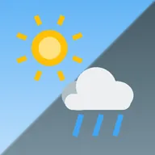
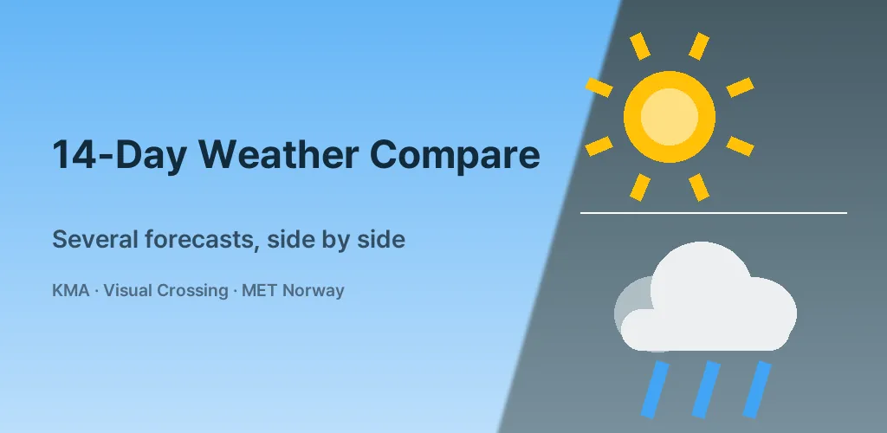
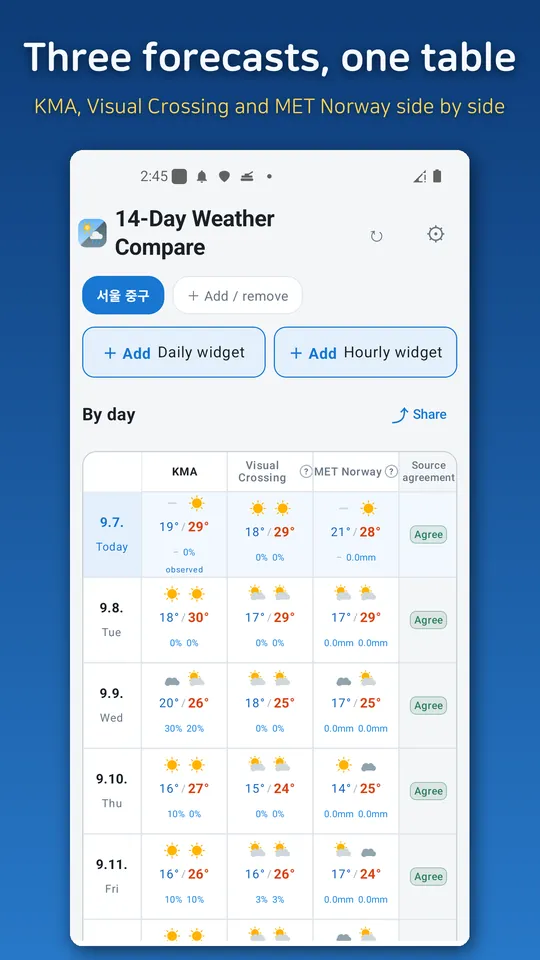
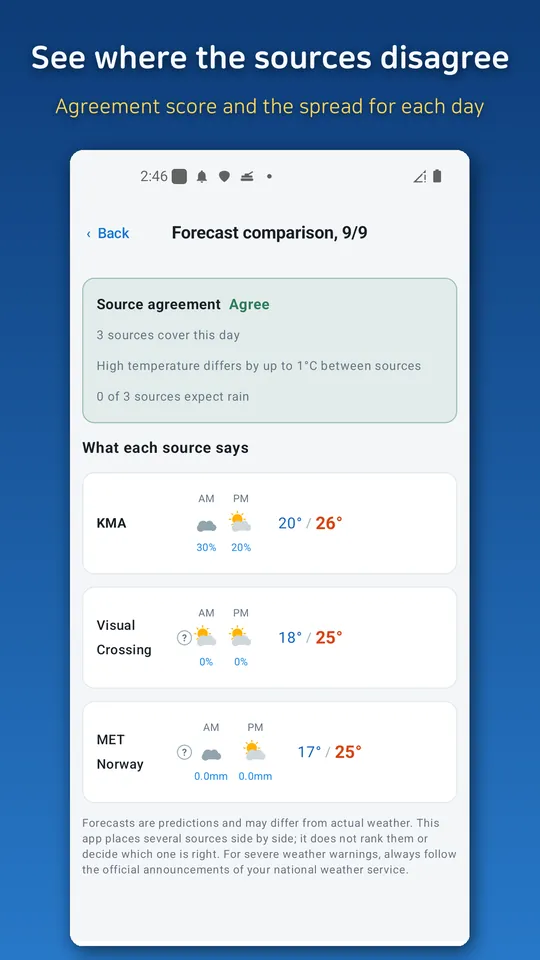
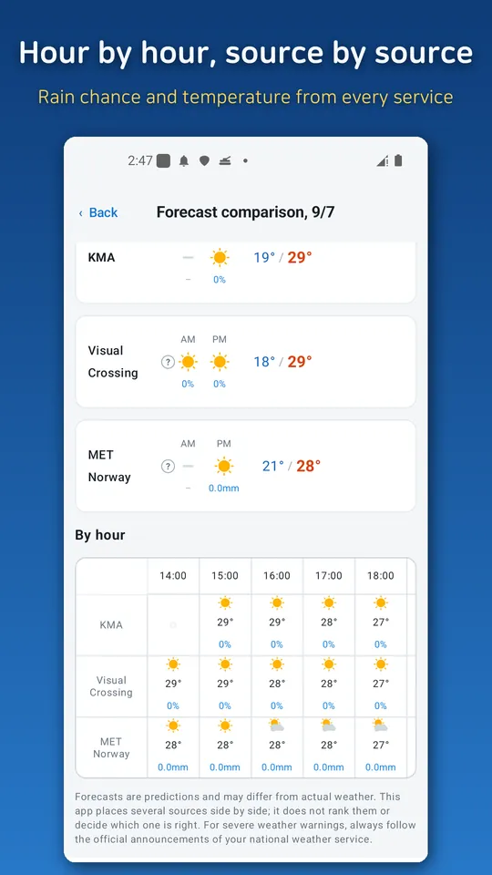
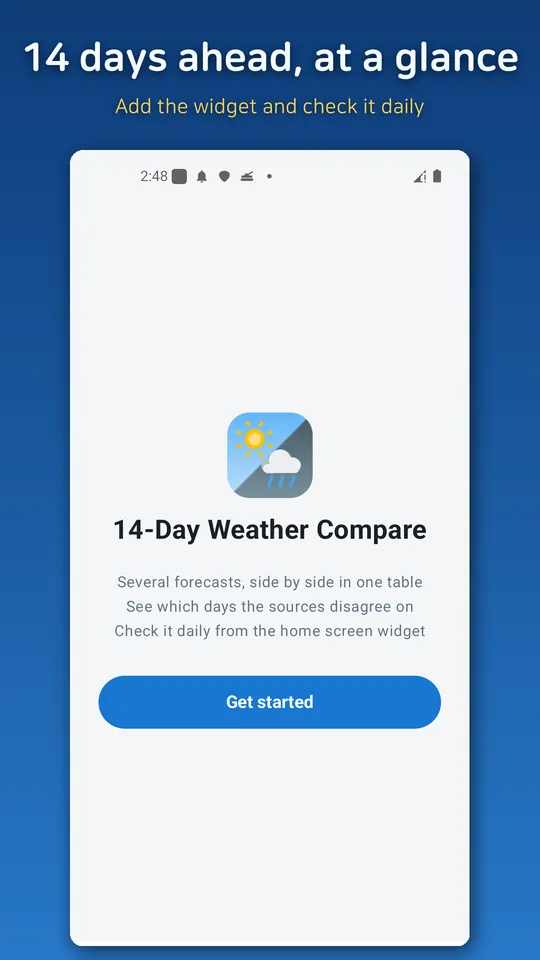

14-Day Weather Compare
Compare daily forecasts from several weather services side by side.





About this app
Have you noticed that weather apps disagree?
One says clear, another says rain, and there is no easy way to tell which to trust — so you end up opening several apps. This app does that for you. It puts several forecasts side by side in one table and shows you how much they differ.
Several forecasts, one table
Dates run across, forecast sources run down. For any given day you can see what each source says, all on one screen.
Source agreement
The bottom row of the table shows how closely the sources agree on each day. When they agree, the forecast for that day is relatively settled. When they diverge, it is not settled yet. This matters most for the later days — when you are planning a trip, a wedding, or a day outdoors two weeks out, it helps to know which days are still uncertain.
Hour by hour for today
The home screen also carries today's hour-by-hour comparison, starting from the current hour.
Tap any date to see what each source says about it in detail.
Search and save places
Save the places you check often and switch between them from the top bar. No location permission is required.
Home screen widget
A widget shows several days of highs and lows at a glance. Add it with one tap from inside the app, and each widget stays pinned to its own place — keep one for home and one for where your family lives. Tap the place name on the widget to change it.
Coverage
The app currently provides forecasts up to 11 days ahead. Coverage will be extended over time.
Sources
Korea Meteorological Administration (KOGL Type 1), Visual Crossing, MET Norway (CC BY 4.0), OpenWeatherMap.
Please note
Forecasts are predictions and may differ from actual weather. This app places sources side by side; it does not rank them or decide which one is right. For severe weather warnings, always follow the official announcements of your national weather service.
The app is free and supported by ads.
Android · free with ads · Developer: RealTunaLove · Store listing in 17 languages
Background story: why I built it